一般情况命令格式： 命令 【-选项】【参数】
比如：ls -la/etc
说明：1.【】这种符号表示可以省略；
2. 当有多个选项时，可以写在一起；
3. 简化选项(一般用一个-)与完整选项（一般用两个--），比如ls -a 等于 ls --all。
①、命令名称：ls
②、英文原意：list
③、命令所在路径：/bin/ls
④、执行权限：所有用户
⑤、功能描述：显示目录文件
⑥、语法： ls 【-ald】【文件或目录】
-a 显示所有文件，包括隐藏文件
-l 详细信息显示
-d 仅显示目录名，而不显示目录下的内容列表
-h 人性化显示（hommization）
-i 查看任意一个文件的i节点（类似于身份证唯一信息）
-t 用文件和目录的更改时间排序；可以用第一个显示的文件判断最近修改的文件
注意：. 开头的文件除非是目录，否则就是隐藏文件
⑦、常用 ls -lh。
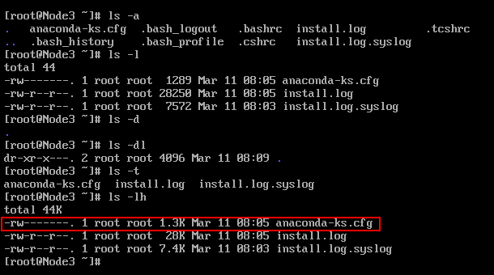
上面分别列出了ls的各种命令组合显示效果。
以 -rw-------. 1 root root 1.3k Mar 11 08:05 anaconda-ks.cfg 为例解析每个字段：
①、-rw-------
第1位：表示文件类型，"-"表示是二进制文件;"d"表示目录;"l"表示软连接文件。后面的每三个为一组。
rw-(u) ---(g) ---(o)：u(user)所有者；g(group)所属组；o(other)其他人访问权限。
r读；w写；x执行；-无权限 。
②、1：引用计数，表示文件被引用过多少次。
③、root：这第一个root表示所有者，一般创建一个文件，所有者默认是创建者。
④、root：这第二个root表示所属组。
⑤、1.3K：表示文件字节大小，不带单位表示字节
⑥、Mar 11 08:05：表示文件的最后修改时间。
注意：Linux没有明确的创建时间，只有最后一次访问时间、文件的状态修改时间、文件的数据修改时间
⑦、anaconda-ks.cfg：表示文件名。
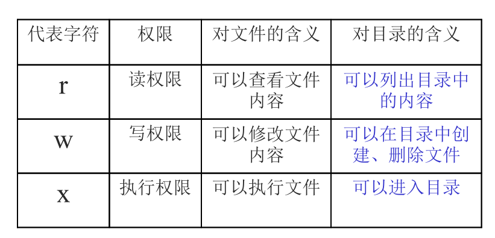
①、命令名称：mkdir
②、英文原意：make directories
③、命令所在路径：/bin/mkdir
④、执行权限：所有用户
⑤、功能描述：创建新目录
⑥、语法： mkdir 【-p】【目录名】
-p 递归创建。
例子：创建单个目录：mkdir /tmp/vae.txt
创建多个目录：mkdir /tmp/a.txt /tmp/b.txt
注意：1、创建的目录已经存在, 会提示我们 Linux 无法创建它。
2、不带任何参数运行 mkdir 命令会在当前目录下创建目录。
3、不带上-p,如果新建的文件上级目录不存在则不会执行成功这种说法是错误的。加或者不加上 -p 前面的目录没有得都会依次创建。
4、创建目录的首要条件是，在想要创建目录的目标路径下你必须具有访问权限。
①、命令名称：cd
②、英文原意：change directory
③、命令所在路径：shell 内置命令
④、执行权限：所有用户
⑤、功能描述：切换目录
⑥、语法：cd【目录名】
例子：切换到指定目录：cd /tmp/vae
回到上一级目录：cd ..
还是在当前目录：cd .
返回上两级目录：cd ../..
返回进入此目录之前所在的目录：cd -
前面的三个命令，ls和mkdir都有命令的所在路径，而cd命令说是shell内置命令。这两者便是Linux内置命令和外部命令。
内部命令实际上是shell程序的一部分，其中包含的是一些比较简单的linux系统命令，这些命令由shell程序识别并在shell程序内部完成运行，通常在linux系统加载运行时shell就被加载并驻留在系统内存中。内部命令是写在bashy源码里面的，其执行速度比外部命令快，因为解析内部命令shell不需要创建子进程。比如：exit，history，cd，echo等。
外部命令是linux系统中的实用程序部分，因为实用程序的功能通常都比较强大，所以其包含的程序量也会很大，在系统加载时并不随系统一起被加载到内存中，而是在需要时才将其调用内存。通常外部命令的实体并不包含在shell中，但是其命令执行过程是由shell程序控制的。shell程序管理外部命令执行的路径查找、加载存放，并控制命令的执行。外部命令是在bash之外额外安装的，通常放在/bin，/usr/bin，/sbin，/usr/sbin......等等。可通过“echo $PATH”命令查看外部命令的存储路径，比如：ls、vi等。
用type命令可以分辨内部命令与外部命令：
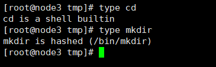
内部命令和外部命令最大的区别就是性能。内部命令由于构建在shell中而不必创建多余的进程，要比外部命令执行快得多。因此和执行更大的脚本道理一样，执行包含很多外部命令的脚本会损害脚本的性能。
①、命令名称：pwd
②、英文原意：print working directory
③、命令所在路径：/bin/pwd** **
④、执行权限：所有用户
⑤、功能描述：显示当前目录
⑥、语法： pwd
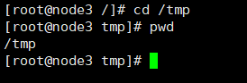
①、命令名称：rmdir
②、英文原意：remove empty directories
③、命令所在路径：/bin/rmdir
④、执行权限：所有用户
⑤、功能描述：删除空目录（如果目录下存在文件则不能删除）
⑥、语法： rmdir 【空目录名】
例子：删除指定空目录：rmdir /tmp/a
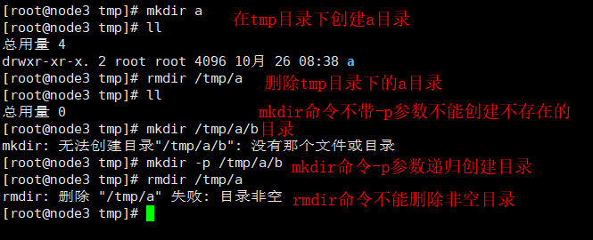
注意：由于此命令只能删除空目录，在实际操作中应用的不多。
①、命令名称：cp
②、英文原意：copy
③、命令所在路径：/bin/cp
④、执行权限：所有用户
⑤、功能描述：复制文件或目录
⑥、语法： cp -rp 【原文件或目录】【目标目录】
-r：复制目录，递归复制多个文件。
-p：保留文件属性，比如修改时间。
例子：比如我们将 root 目录下的install.log 文件复制到 tmp 目录下
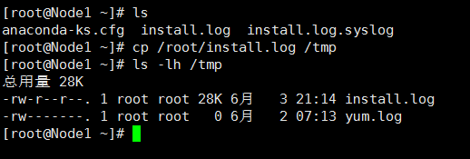
例子2：在复制过程中修改名称，将 root 目录下的install.log文件复制到 tmp的copyinstall.log 文件。
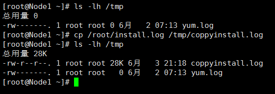
例子3：同时复制多个目录，将 root 目录下的install1.log、install2.log复制到tmp目录下：
cp -r /root/install1.log /root/install2.log /tmp
①、命令名称：mv
②、英文原意：move
③、命令所在路径：/bin/mv
④、执行权限：所有用户
⑤、功能描述：剪切文件、改名
⑥、语法： mv【原文件或目录】【目标目录】
例子：在tmp目录下创建目录tmp1，然后在tmp1目录下创建目录tmp1_1,将tmp1目录下的tmp1_1剪切到tmp目录下。
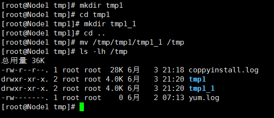
注意：mv也可以在剪切过程中修改名字。
①、命令名称：rm
②、英文原意：remove
③、命令所在路径：/bin/rm
④、执行权限：所有用户
⑤、功能描述：剪切文件、改名
⑥、语法： rm -rf 【文件或目录】
-r：递归删除
-f：强制执行
例子：在tmp目录下有两个目录tmp1和tmp1_1,rm -r tmp1_1是删除这个目录，但是需要输入y来确认
rm -rf tmp1是强制删除tmp1目录，不需要确认，但是容易误删文件，没有反悔的机会。
rm -rf tmp1 tmp2同时删除两个文件
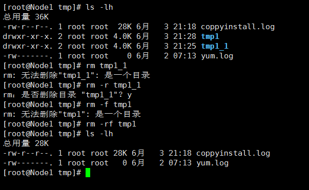
①、命令名称：touch
②、英文原意：touch
③、命令所在路径：/bin/touch
④、执行权限：所有用户
⑤、功能描述：创建空文件
⑥、语法： touch 【文件名】
例子：在 tmp 目录下创建 tmp.log 文件，touch tmp.log。
注意：创建文件时，文件名不要有空格，不然就是创建了 两个文件，比如touch progrom files这是创建了两个文件。
如果需要创建带空格的文件名需要用""，比如 touch "program file"创建了1个文件名为program file。
①、命令名称：cat
②、英文原意：cat
③、命令所在路径：/bin/cat
④、执行权限：所有用户
⑤、功能描述：显示文件内容（只能显示内容较少的文件）
⑥、语法： cat【文件名】
-n：显示文件行号
例子：通过不加参数-n和加参数-n，显示/etc/issue的内容。
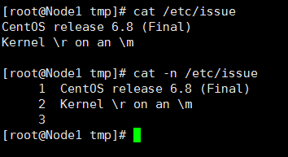
注意：此命令只能显示文件内容比较少的文件，如果文件内容很多，用cat命令是不合适的，视觉效果是屏幕不断滚动更新。
①、命令名称：tac
②、英文原意：tac
③、命令所在路径：/bin/tac
④、执行权限：所有用户
⑤、功能描述：显示文件内容（只能显示内容较少的文件）
⑥、语法： tac【文件名】
例子：显示/etc/issue的内容。
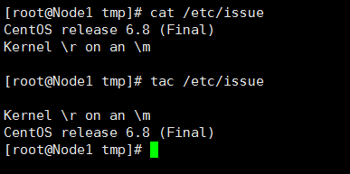
①、命令名称：more
②、英文原意：more
③、命令所在路径：/bin/more
④、执行权限：所有用户
⑤、功能描述：分页显示文件内容
⑥、语法： more【文件名】
（空格）或f 翻页（一页一页的往后显示）
（Enter）换行（一行一行的往后显示）
q 或 Q 退出
例子：查看etc目录下的services文件信息：more /etc/services
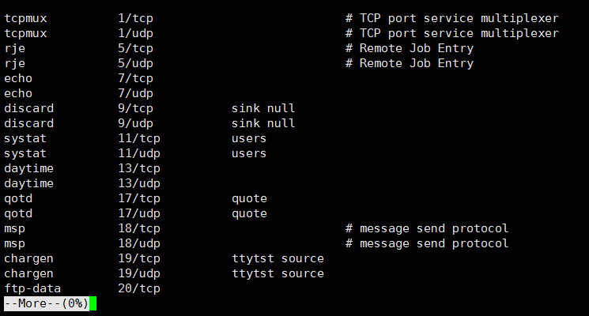
①、命令名称：less
②、英文原意：
③、命令所在路径：/usr/bin/less
④、执行权限：所有用户
⑤、功能描述：分页显示文件内容
⑥、语法： less【文件名】
（空格）或f或PgDn：翻页（一页一页的往后显示）
PgUp：向前翻页
（Enter）换行或向下的箭头：一行一行的往后显示
向上的箭头：一行一行的往前显示
q或Q：退出
/需要查找的字符 回车：查找字符
例子：查看etc目录下的services文件信息：less /etc/services 并查找tcp：/tcp 回车
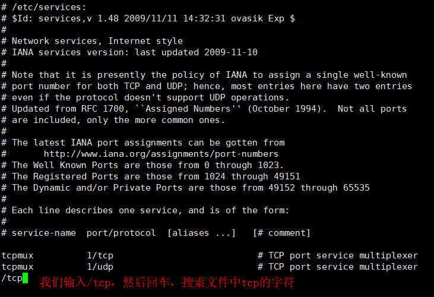
回车之后，如下显示
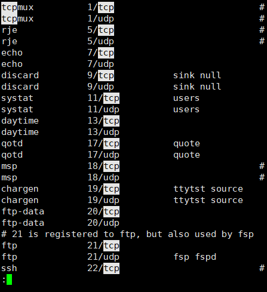
①、命令名称：head
②、英文原意：
③、命令所在路径：/usr/bin/head
④、执行权限：所有用户
⑤、功能描述：显示文件的前面几行
⑥、语法： head【文件名】
-n：指定显示的行数
不加-n：默认显示前20行数据
例子：显示 etc目录下的 services 文件前面 10 行 head -n 10 /etc/services
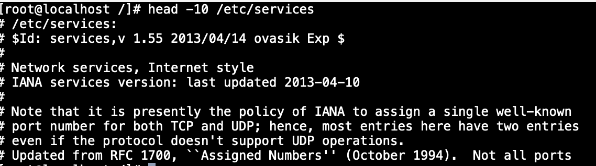
①、命令名称：tail
②、英文原意：
③、命令所在路径：/usr/bin/tail
④、执行权限：所有用户
⑤、功能描述：显示文件的后面几行
⑥、语法： tail【文件名】
-n：指定显示的行数
-f：动态显示文件末尾内容（即文件实时变化，那么显示内容也会随之变化）
例子：显示etc目录下的 services 文件后面10行 tail -n 10 -f /etc/services
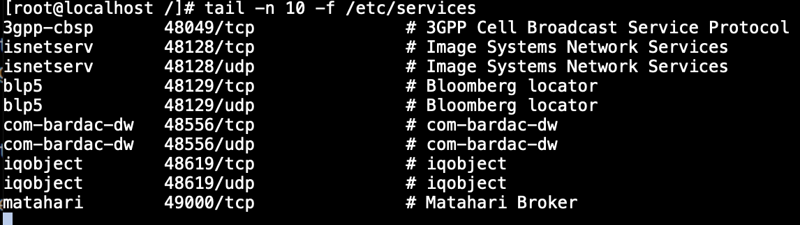
注意：如果我们想结束加上 -f显示的tail命令，通过Ctrl+C。
①、命令名称：ln
②、英文原意：link
③、命令所在路径：/bin/link
④、执行权限：所有用户
⑤、功能描述：生成链接文件
⑥、语法： ln -s 【源文件】【目标文件】
-s：创建软链接
不加-s：创建硬链接
例子1：创建文件 /etc/issue的软链接/tmp/issue.soft：ln -s /etc/issue /tmp/issue.soft
例子2：创建文件 /etc/issue的硬链接/tmp/issue.hard：ln /etc/issue /tmp/issue.hard
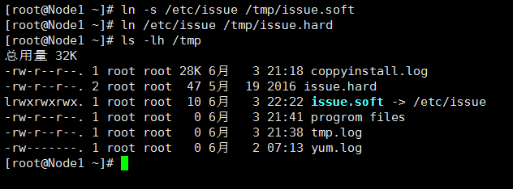
软链接与硬链接区别：
软链接前面是l开头的（link），而硬链接是-开头，表示文件。
软链接所有者和所属组具有全部操作的权限，rwxrwxrwx；而硬链接不是。也就是软链接的前面都是 lrwxrwxrwx。
软链接类似与windows的快捷方式，有明显箭头指向源文件。
硬链接文件除了文件名与源文件不一样，其余所有信息都是一样的。类似于cp复制操作。但是又和复制不一样，硬链接可以同步更新。
通过ls -i操作，来查看文件的i节点。发现硬链接和源文件的i节点是相同的，而软链接与源文件的i节点是不同的。
不允许将硬链接指向目录；不允许跨分区创建硬链接。
①、命令名称：chmod
②、英文原意：change the permissions mode of a file
③、命令所在路径：/bin/chmod
④、执行权限：所有用户
⑤、功能描述：改变文件或目录权限
⑥、语法： chmod 【{ugoa}{+-=}{rwx}】【文件或目录】
ugoa分别是：u:表示所有者，g:表示所属组，o:表示其他人，a:表示所有人。而rwx表示可读可写可执行。
【mode=421】【文件或目录】：我们将权限用数字表示，其中r表示4=22，w表示2=21，x表示1=20。那么我们可以这样理解：具有rwx权限的数字就是7=4+2+1，具有rw-权限的数字是6=4+2，具有r-- 权限的数字是4。
-R 递归修改
注意 ：不是每一个用户都有权限更改某个文件或目录权限，能更改文件或目录权限的只有两种用户
文件的所有者。我们通过ls命令查看某个文件的详细信息，可以看到该文件的所有者。
root用户，root用户是linux系统权限最大的用户。
例子1：赋予tmp目录下的 tmp.log所有者x的权限；赋予所属组w权限，其他人w权限。
chmod u+x /tmp/tmp.log
chmod g+w,o+w /tmp/tmp.log
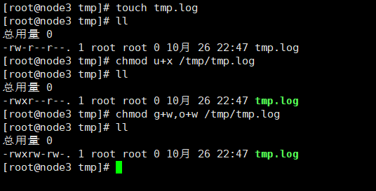
例子2：将上面例子改为用数字来操作，也就是说我们要给 tmp.log赋予的文件权限是 rwxrw-rw-，用数字表示是766。
chmod 766 tmp.log
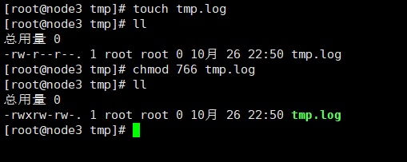
例子3：给 tmp 目录下所有文件和目录赋予 776 的权限。
chmod -R 776 /tmp
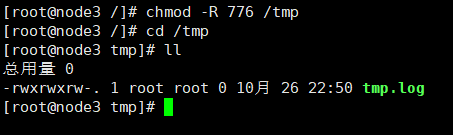
①、命令名称：chown
②、英文原意：change file ownership
③、命令所在路径：/bin/chown
④、执行权限：所有用户
⑤、功能描述：改变文件或目录的所有者
⑥、语法： chmod 【用户】【文件或目录】
注意：能更改文件或目录的所有者用户是 root
例子：tmp.log的所有者更改为 vae 用户：chown vae tmp.log
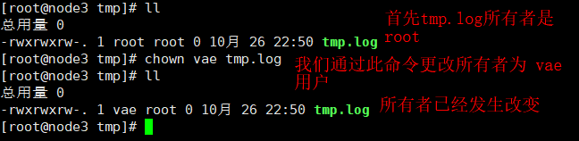
①、命令名称：chgrp
②、英文原意：change file group ownership
③、命令所在路径：/bin/chown
④、执行权限：所有用户
⑤、功能描述：改变文件或目录的所属组
⑥、语法： chgrp【用户组】【文件或目录】
注意：能更改文件或目录的所有者用户是 root
①、命令名称：umask
②、英文原意：the user file-creation mask
③、命令所在路径：shell 内置命令
④、执行权限：所有用户
⑤、功能描述：显示、设置文件的缺省权限
⑥、语法： umask 【-S】
-S：以rwx形式显示新建文件的缺省权限。
分别执行umask umask -S
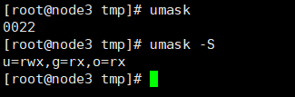
其中umask执行显示结果是0022：第一个0表示特殊权限；022表示权限的掩码值，我们用777减去022得到755（是每一位相减），表示的就是当前的权限。
umask -S：输出的rwxr-xr-x，这个值用数字表示就是755。
755表示：默认创建的文件就是rwx r-x r-x。
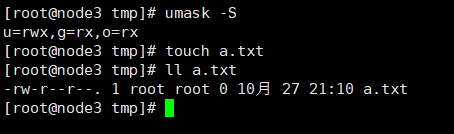
注意：发现新创建的文件没有可执行的权限，这是因为Linux系统的一种自我保护，因为类似的病毒木马程序都是具有可执行权限的。所以在Linux系统中，新创建的文件是没有可执行权限的。
问题：那么我们如何设置默认权限呢？
回答：比如我们想将新创建的文件权限设置为rwxr-xr--，也就是754。我们用777减去754得到023。也就是通过执行
umask 023来完成默认权限设置。
①、命令名称：find
②、英文原意：find
③、命令所在路径：/bin/find
④、执行权限：所有用户
⑤、功能描述：进行各种花式文件搜索
⑥、语法：find【搜索范围】【匹配条件】
注意1：Linux搜索和windows是有明显区别的，Linux严格区分文件大小写。
注意2：find搜索还是比较耗费性能，尽量缩小范围使用。
语法：find【搜索目录】-name或者-iname【搜索字符】
-name是区分大小写的，-iname是不区分大小写的。
例子1：find /etc -name init，精准搜索，名字必须为init才能搜索的到。
例子2：find /etc -iname init，精准搜索，名字必须为 init或者有字母大写也能搜索的到。
例子3：find /etc -name *init，模糊搜索，以 init 结尾的文件或目录名。
例子4：find /etc -name init???，模糊搜索，?表示单个字符，即搜索到init___。
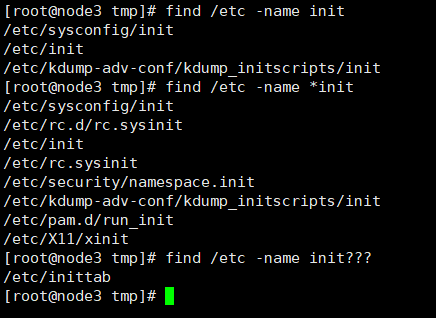
语法：find【搜索目录】-size【+/-n】
+n 表示大于，-n 表示小于，n 表示等于。
n：代表数据块，1数据块=512Byte==0.5KB，也就是1KB等于2数据块。
例子1：find / -size +204800，在根目录下查找大于100M的文件。100MB=102400KB=204800数据块。
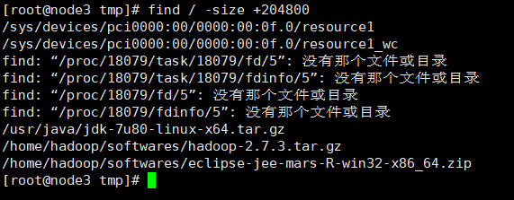
语法：find【搜索目录】-group/user【用户名】
例子1：find /home -group root，在home目录下查询所属组为root的文件。
例子2：find /home -user root，在home目录下查询所有者为root的文件。
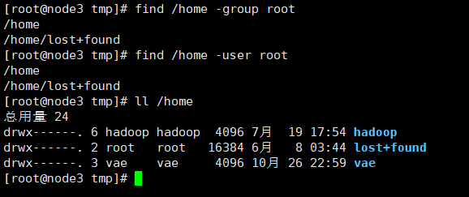
语法：find【搜索目录】【选项】【时间】
选项：-amin（访问时间）；-cmin（文件属性被更改）；-mmin（文件内容被修改）
时间：+n、-n、n分别表示超过n分钟，n分钟以内和n分钟
例子：find /etc -cmin -5，在 /etc 目录下查找5 分钟内被修改过属性的文件和目录。
语法：find【搜索目录】-type/-inum
-type：按照类型搜索，f表示文件，d表示目录，l表示软链接。
-inum：根据i节点查找。
例子：find /tmp -inum 400342，查找/tmp目录下大小为400342节点的文件或目录。
语法：find 【搜索目录】【条件1】-a/-o 【条件2】...
-a：表示两个条件同时满足（and）。
-o：表示两个条件满足任意一个（or）。
例子：find /etc -size +163840 -a -size -204800，查找/etc目录下大于80MB同时小于100MB的文件。 1MB=1024KB=2048数据块。
①、命令名称：locate
②、英文原意：
③、命令所在路径：/usr/bin/locate
④、执行权限：所有用户
⑤、功能描述：在文件资料库中查找文件
⑥、语法：locate【文件名】
-i：不区分大小写
注意：这里和find命令是有区别的，find是全盘检索，而locate是在文件资料库中进行搜索。所以locate命令的执行要比find命令执行速度快很多。但是这里有个问题，文件资料库是需要不断更新的。我们新创建的文件如果不更新 文件资料库，使用locate是查找不到的。
updatedb：手动更新资料库，但是对于/tmp目录下的新建文件，是更新不到文件资料库的，因为/tmp目录不属于文件资料库的收录范围。
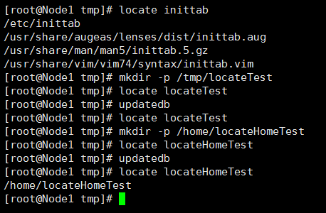
①、命令名称：which
②、英文原意：
③、命令所在路径：/usr/bin/which
④、执行权限：所有用户
⑤、功能描述：搜索命令所在的目录及别名信息
⑥、语法：which【命令】
例子：which ls，查询ls命令所在目录以及别名信息。
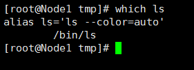
①、命令名称：whereis
②、英文原意：
③、命令所在路径：/usr/bin/whereis
④、执行权限：所有用户
⑤、功能描述：搜索命令所在的目录及帮助文档路径
⑥、语法：whereis【命令】
例子：whereis ls查询 ls 命令所在目录以及帮助文档路径。
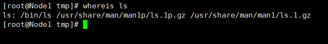
①、命令名称：grep
②、英文原意：
③、命令所在路径：/bin/grep
④、执行权限：所有用户
⑤、功能描述：在文件中搜寻字符串匹配的行并输出
⑥、语法：grep -iv 【指定字符串】【文件】
-i 不区分大小写
-v 排除指定字符串
范例：grep mysql /root/install.log，查找/root/install.log 文件中包含mysql字符串的行，并输出。
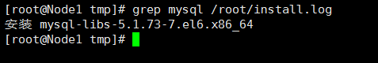
①、命令名称：man
②、英文原意：manual
③、命令所在路径：/usr/bin/man
④、执行权限：所有用户
⑤、功能描述：获得帮助信息
⑥、语法： man【命令或配置文件】
例子1：man ls，查看ls命令的帮助信息。
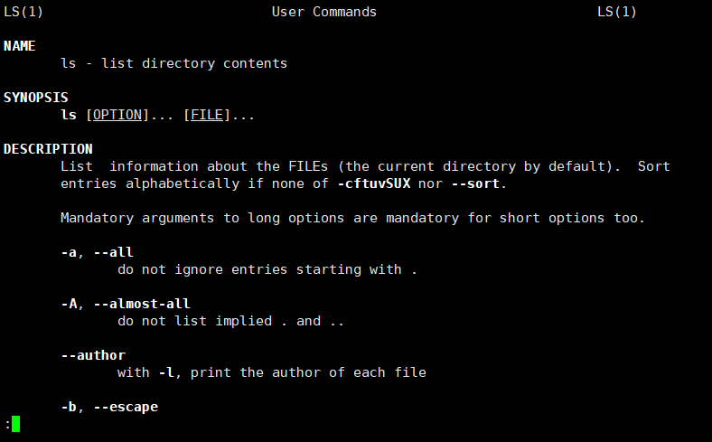
例子2：man services查看配置文件 services 的帮助信息。注意：查看配置文件不需要加上绝对路径，如果是 man /etc/services，那么显示的就是services的文件内容。
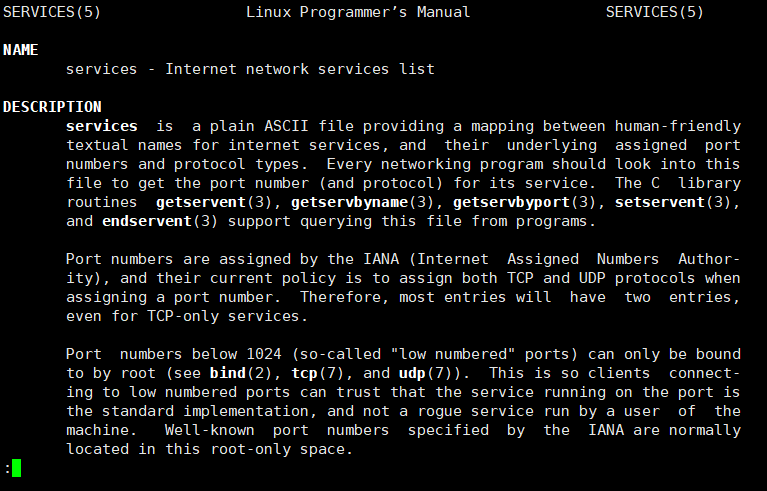
如果以文件即是命令，又是配置文件，比如man passwd，系统是优先显示命令帮助信息的。如果你想看passwd的配置文件信息，可以 man 5 passwd。因为5表示配置文件信息，1表示命令帮助信息。
①、命令名称：help
②、英文原意：
③、命令所在路径：shell 内置命令
④、执行权限：所有用户
⑤、功能描述：获得shell内置命令帮助信息
⑥、语法： help【shell内置命令】
例子1：help umask查看umask命令的帮助信息。
通过which判断是内置命令还是外部命令，找不到路径就是shell内置命令。
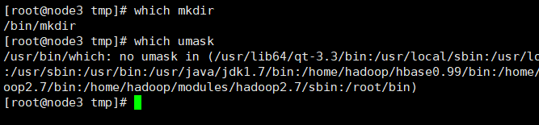
一下命令都是shell内置命令。
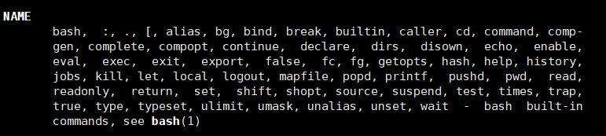
语法：【命令】 --help
技巧：可以直接使用这个命令查看简要的命令帮助信息。
例子：ls --help，查看ls命令的帮助信息。
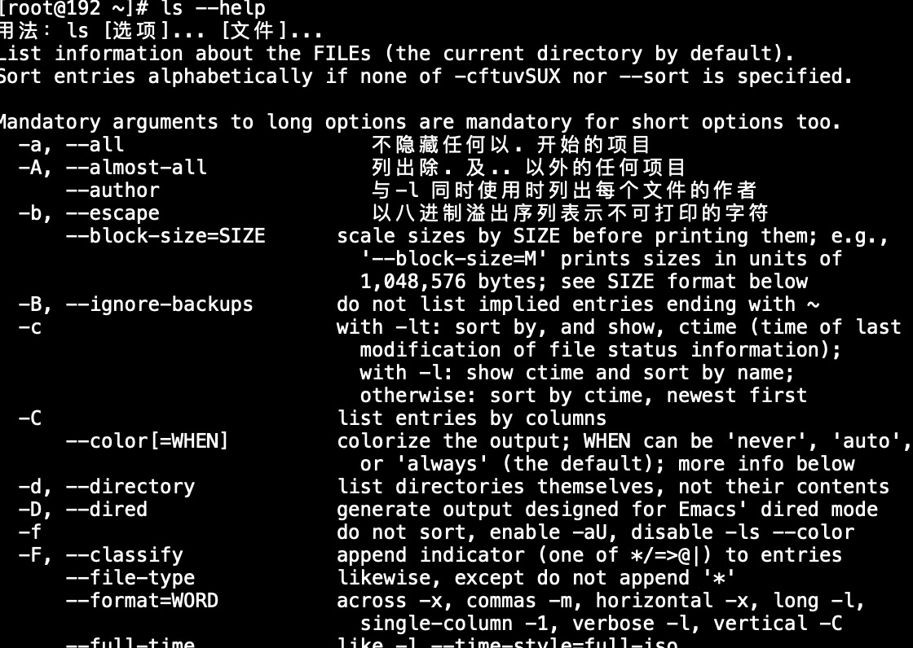
①、命令名称：useradd
②、英文原意：
③、命令所在路径：/usr/sbin/useradd
④、执行权限：root
⑤、功能描述：添加新用户
⑥、语法： useradd【用户名】
例子1：useradd tom，添加用户tom。
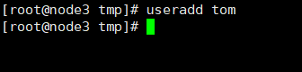
①、命令名称：passwd
②、英文原意：password
③、命令所在路径：/usr/bin/passwd
④、执行权限：root
⑤、功能描述：修改用户的密码
⑥、语法： passwd【用户名】
注意：root用户能修改任何用户的密码。而普通用户只能修改自己的密码，而且密码要符合密码规则，不然修改不了。
例子1：passwd tom修改用户tom的密码。
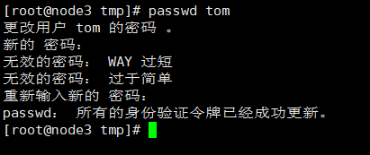
①、命令名称：who
②、英文原意：
③、命令所在路径：/usr/bin/who
④、执行权限：root
⑤、功能描述：查看登录用户简单信息
⑥、语法：who
例子：who，查看当前登录用户的信息。
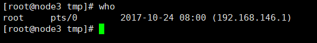
①、命令名称：w
②、英文原意：
③、命令所在路径：/usr/bin/w
④、执行权限：root
⑤、功能描述：查看登录用户详细信息
⑥、语法：w
例子：w，查看当前登录用户的详细信息。
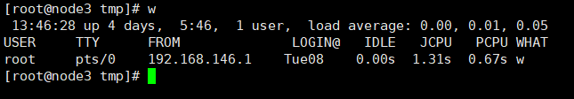
第一排
13:46:28：当前系统的时间；
up 4 days：Linux连续运行时间4天；
1 user：表示当前1个用户登录；
load average:0.00,0.01,0.05：系统的负载情况，分别表示过去一分钟,五分钟和十五分钟系统的负载情况。
第二排
USER：登录用户名；
TTY：登录终端，pts表示远程终端，tty表示本地终端；
FROM：登录的主机IP，如果没有写表示本机登录；
①、命令名称：su
②、英文原意：
③、命令所在路径：/usr/bin/su
④、执行权限：root
⑤、功能描述：切换用户登录
⑥、语法：su 【用户名】
①、命令名称：gzip
②、英文原意：GNU zip
③、命令所在路径：/bin/gzip
④、执行权限：所有用户
⑤、功能描述：压缩文件，压缩后格式为.gz
⑥、语法： gzip【需要压缩的文件】
⑦、压缩后文件格式：.gz
注意：只能压缩文件，不能压缩目录；压缩完后不保留原文件。
例子：gzip tmpgz我们在tmp目录下创建一个文件tmpgz，然后通过gzip tmpgz 压缩该文件。
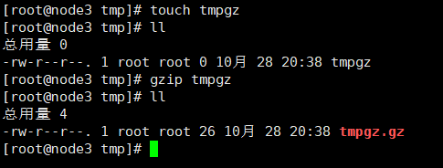
①、命令名称：gunzip
②、英文原意：GNU unzip
③、命令所在路径：/bin/gunzip
④、执行权限：所有用户
⑤、功能描述：将格式为.gz的压缩文件解压
⑥、语法： gunzip【压缩文件名】
注意：解压后不保留原文件
范例：gunzip tmpgz.gz，将上面压缩后的文件tmpgz.gz解压。
①、命令名称：tar
②、英文原意：
③、命令所在路径：/bin/tar
④、执行权限：所有用户
⑤、功能描述：将文件压缩为.tar.gz格式
⑥、语法： tar 选项【-zcvf】【压缩后文件名】【目录】
-c：打包
-v：显示详细信息
-f：指定文件名
-z：打包同时压缩
例子1：tar -zcvf a.tar.gz a ，在/tmp目录下创建a目录，然后在a目录下创建文件a.txt，压缩a目录。
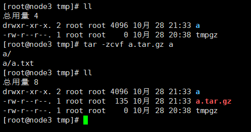
与前面的gzip命令不同，通过tar压缩后是保留原文件或原目录的。
①、命令名称：tar
②、英文原意：
③、命令所在路径：/bin/tar
④、执行权限：所有用户
⑤、功能描述：将格式为.tar.gz的压缩文件解压
⑥、语法：tar 选项【-zxvf】【.tar.gz的压缩文件名】【指定解压后的文件存放目录，默认当前目录】
-x 解包
-v 显示详细信息
-f 指定解压文件
-z 解压缩
例子：tar -zxvf a.tar.gz，将a.tar.gz文件解压。
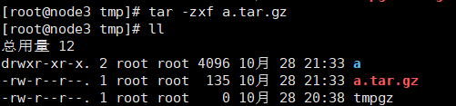
①、命令名称：zip
②、英文原意：
③、命令所在路径：/usr/bin/zip
④、执行权限：所有用户
⑤、功能描述：将文件或目录压缩为.zip格式
⑥、语法： zip 选项【-r】【压缩后文件名】【文件或目录】
-r：递归压缩，一般压缩目录
⑦、压缩后文件格式：.zip
例子：zip -r a.zip a，在/tmp目录下创建a目录，将a目录压缩为a.zip文件。
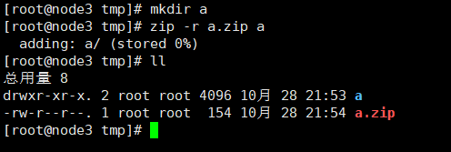
通过zip压缩后是保留原文件或原目录的。
①、命令名称：unzip
②、英文原意：
③、命令所在路径：/usr/bin/unzip
④、执行权限：所有用户
⑤、功能描述：将格式为.zip的压缩文件解压
⑥、语法：uzip【.zip的压缩文件名】
例子：unzip a.zip将a.zip文件解压。
①、命令名称：bzip2
②、英文原意：
③、命令所在路径：/usr/bin/bzip2
④、执行权限：所有用户
⑤、功能描述：将文件压缩为.bz2 格式
⑥、语法： bzip2 选项【-k】 【文件】
-k：产生压缩文件后保留原文件
⑦、压缩后文件格式：.bz2
例子：bzip2 -k a在/tmp目录下创建a文件，然后执行命令。
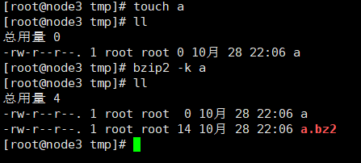
①、命令名称：bunzip2
②、英文原意：
③、命令所在路径：/usr/bin/bunzip2
④、执行权限：所有用户
⑤、功能描述：将格式为.bz2的压缩文件解压
⑥、语法：bunzip2 选项【-k】【压缩文件】
-k：解压之后是否保留源文件。
例子：bunzip2 a.bz2，将a.bz2 文件解压。
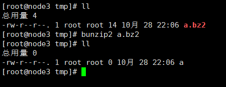
①、命令名称：write
②、英文原意：
③、命令所在路径：/usr/bin/write
④、执行权限：所有用户
⑤、功能描述：给指定用户发送信息，以Ctrl+D 保存结束
⑥、语法： write【用户名】
例子：write vae，给vae用户发送信息。
①、命令名称：wall
②、英文原意：write all
③、命令所在路径：/usr/bin/wall
④、执行权限：所有用户
⑤、功能描述：发送广播信息
⑥、语法：wall【信息内容】
例子：发送广播信息：wall hello linux!!!
①、命令名称：ping
②、英文原意：
③、命令所在路径：/bin/ping
④、执行权限：所有用户
⑤、功能描述：测试网络连通性
⑥、语法： ping 【-c n】【IP地址/域名】
-c n：是指定发送次数，如果不指定次数，那么将不断发送连接信息。
例子：ping baidu.com，ping跟百度的连通性。
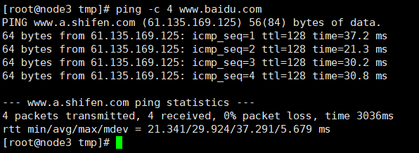
①、命令名称：ifconfig
②、英文原意：interface configure
③、命令所在路径：/sbin/ifconfig
④、执行权限：root
⑤、功能描述：查看和设置网卡信息
⑥、语法：ifconfig 【网卡名称】【IP地址】
例子1：ifconfig，查看本机网卡信息。
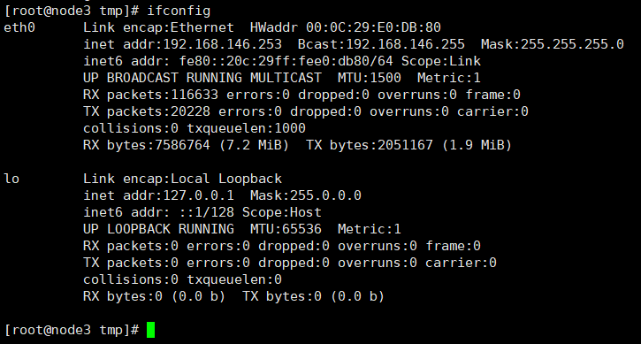
例子2：ifconfig eth0，查看eth0 的网卡信息。
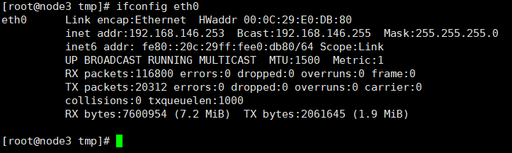
①、命令名称：mail
②、英文原意：
③、命令所在路径：/bin/mail
④、执行权限：所有用户
⑤、功能描述：查看发送电子邮件
⑥、语法：mail【用户名】
例子：mail root，给root用户发送邮件。
①、命令名称：last
②、英文原意：
③、命令所在路径：/usr/bin/last
④、执行权限：所有用户
⑤、功能描述：列出所有登录过系统的用户信息
⑥、语法：last
例子：last，查看所有登录系统的用户。
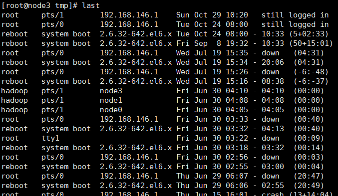
①、命令名称：traceroute
②、英文原意：
③、命令所在路径：/usr/bin/traceroute
④、执行权限：所有用户
⑤、功能描述：显示数据包到主机间的路径
⑥、语法：traceroute 【IP地址】
①、命令名称：netstat
②、英文原意：
③、命令所在路径：/bin/netstat
④、执行权限：所有用户
⑤、功能描述：显示网络相关信息
⑥、语法：netstat【选项】
-t：TCP协议
-u：UDP协议
-l：监听
-r：路由
-n：显示IP地址和端口号
例子1：netstat -tlun 查看本机监听的端口。
例子2：netstat -an 查看本机所有的网络连接。
例子3：netstat -rn 查看本机路由表。
①、命令名称：setup
②、英文原意：
③、命令所在路径：/usr/bin/setup
④、执行权限：root
⑤、功能描述：配置网络，比如IP地址，子网掩码等
⑥、语法：setup
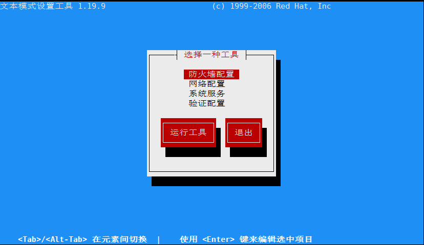
①、命令名称：mount
②、英文原意：
③、命令所在路径：/bin/mount
④、执行权限：所有用户
⑤、功能描述：给光盘、U盘等外界存储设备分配类似于windows系统的盘符，便于访问。
⑥、语法：mount 【-t 文件系统】设备文件名 挂载点
例子：在虚拟机光盘里面放入一张CD。
将光盘挂载到 /mnt/cdrom 目录下：mount -t iso9960 /dev/sr0 /mnt/cdrom。-t iso9660 可以省略
卸载：umount /dev/sr0
①、命令名称：shutdown
②、英文原意：
③、命令所在路径：/sbin/shutdown
④、执行权限：root
⑤、功能描述：进行关机重启操作
⑥、语法：shutdown 【选项】 【时间】
-c：取消前一个关机命令
-h：关机
-r：重启
例子1：马上关机：shutdown -h now
例子2：晚上八点半关机：shutdown -h 20:30
注意：推荐使用该命令进行关机，此命令关机之前会正确的关闭系统的服务。
①、halt
②、poweroff
③、init0
①、reboot
②、init6
①、logout